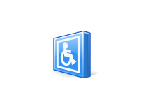

- LliureX is committed to making free software accessible to those people with any physical, hearing or visual disability. We are really aware of the fact that we still have got a long hard challenge ahead on this field. However and due to its importance, it is a commitment which cannot be overlooked and which is worth keeping.
- From the Applications menu, the Accessibility option provides applications such as Dasher predictive keyboard, Orca screen magnifier, onBoard screen keyboard.
- You can either select the option System -> Preferences -> Accesibility, which allows setting up the accessibility preferences for the desktop.
